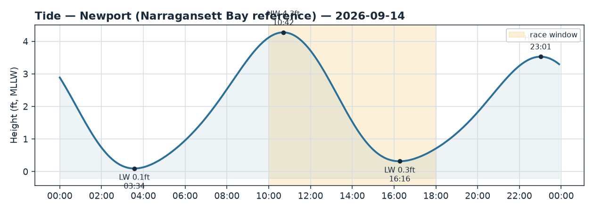
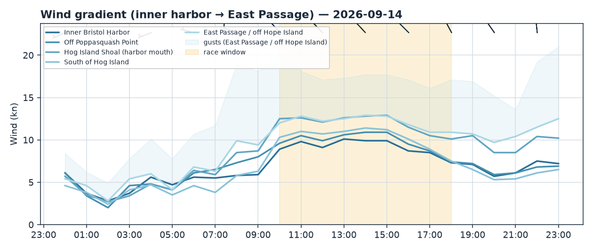
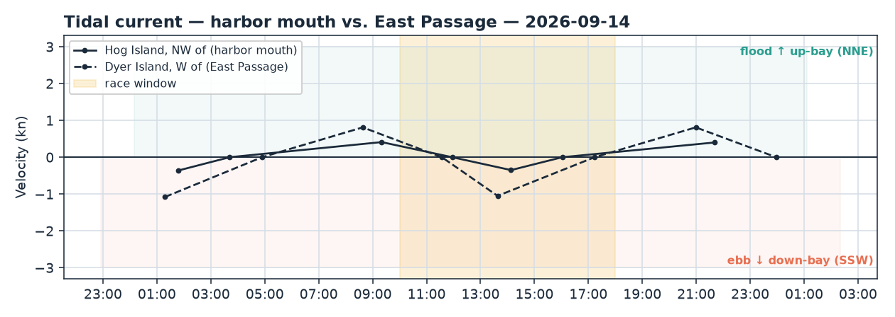

Bristol Harbor · Rhode Island
Mon 14 Sep 2026 · Daysail
A crisp, sunny fall day with a spirited NW breeze — great sailing if you're happy on the wind, with gusts that reward a reef for a mellower ride.
The day
It's a lovely early-fall day to get out — wall-to-wall sun, comfortable air, and a steady NW breeze filling the harbor. The character is spirited rather than mellow: a northwesterly off the land tends to be shifty and puffy, and the numbers back that up, with average wind in the low teens and gusts nudging 20. Confident, experienced crews will have a ball; if you've got kids aboard or want a relaxed sail, keep a reef handy and pick your patch of water and it's still a very manageable, fun day.
Wind
Expect a northwesterly (roughly NW to NNW, ~315–335°) holding all day rather than a classic sea-breeze fill — this one's blowing off the Bristol/Poppasquash land, so it'll come in shifty and gusty, with puffs stronger than the lulls. Inside the harbor it's a nice-to-powered-up breeze, averaging around 9–12 kt with gusts toward 18–20. There's a real up-bay/down-bay split in the live readings: the Newport anemometer down at the Passage mouth is only reading 8–9 kt, while Conimicut a few miles up the bay is honking 17–20 kt — so the farther north/up-bay you sail, the more breeze (and bigger gusts) you'll find. The forecast may be running a touch strong versus what's actually blowing lower down, so don't be surprised if it feels a shade gentler than the top-end numbers near the harbor mouth.
Because the wind is out of the NW, look for a soft, patchy lee tucked in behind Poppasquash Neck (the west shore), on its east and southeast side — nice if you want a calmer spot, but expect the breeze to fill back in and clock a little as you slide out of the shadow. Best window: late morning through mid-afternoon while the sun keeps the breeze honest; there's no need to rush out at 10.
Tide & current
High water is at 10:42 (about 4.3 ft) and low is at 16:16 (a skinny 0.3 ft), so the afternoon draws down to a genuinely low tide — give the shallow harbor edges and any thin spots a wide berth after about 15:00, and mind your depth if you're poking near the shoreline. Current is easygoing for a casual sail: it goes near-slack at the harbor mouth around midday (~11:57), then a gentle ebb sets seaward (SSW) through the afternoon, slack again around 16:00. Out toward the East Passage the ebb runs harder (around a knot), so if you venture past Hog Island into the Passage in the early afternoon you'll feel it carrying you seaward. The NW wind isn't squarely against the current, so no nasty wind-against-tide chop to worry about — just an honest fall breeze with a little short harbor wave.
Good to know
A beauty of a day: sunny and clear, highs around 72°F, no rain in the forecast. It's fall, though, so mornings and the on-water breeze will feel cool — bring a layer or light spray top, especially in those up-bay gusts. With the breeze gusting toward 20 kt in spots, wear your life jacket and keep everyone clipped-in-minded, particularly if you head north where it's windier. A good plan is to head out around late morning as the tide tops off and the breeze settles in, and aim to be back by mid-afternoon — you'll dodge the lowest water near the edges and finish while it's still warm and sunny. Enjoy it!


